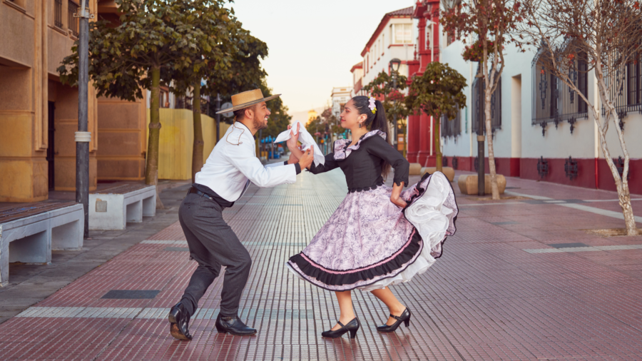

Tradições e Folclore do Povo Chileno

A Cueca, dança nacional do Chile
A cultura do Chile é uma rica fusão de elementos indígenas, principalmente da herança mapuche, com a forte influência da colonização espanhola. Esta mistura reflete-se na música, nas celebrações populares e no artesanato tradicional preservado de geração em geração.
A dança nacional é a Cueca, caracterizada pelo uso de lenços brancos e por um ritmo alegre que simboliza o cortejo entre o homem e a mulher. Festividades tradicionais como as Fiestas Patrias em setembro reúnem o país inteiro em torno de fondas, música folclórica e trajes típicos.